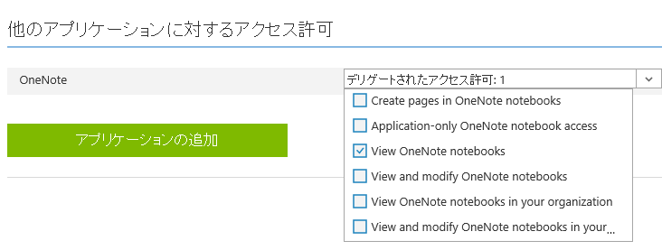
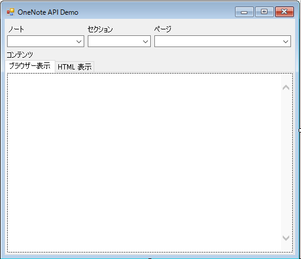
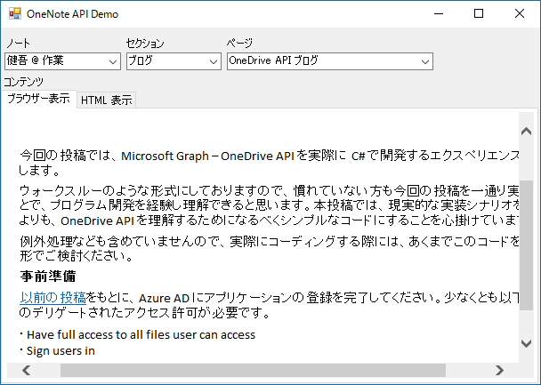
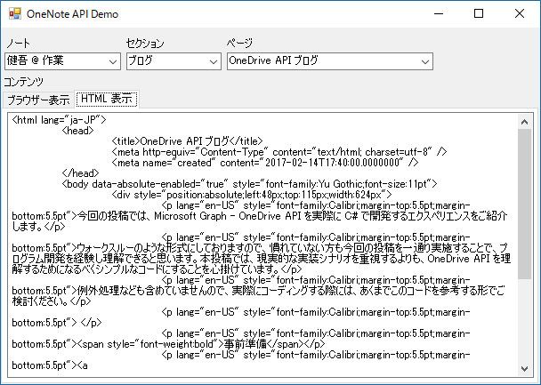
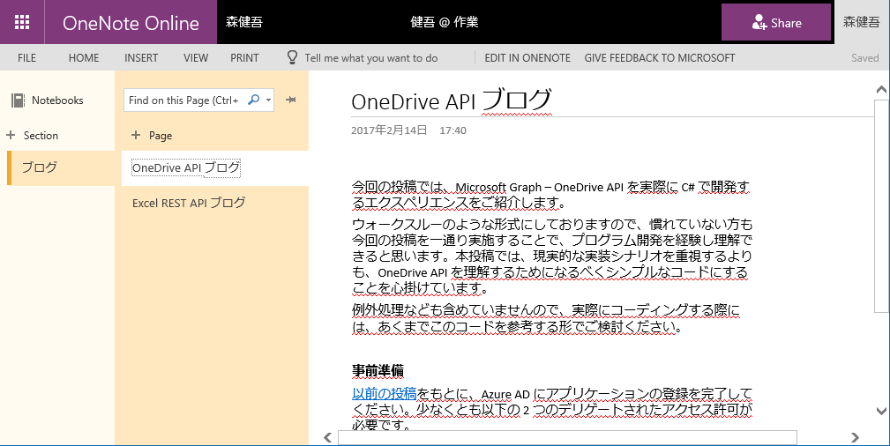

(※ 2017 年 2 月 17 日に Japan Office Developer Support Blog に公開した情報のアーカイブです。)
こんにちは、Office Developer サポートの森 健吾 (kenmori) です。
今回の投稿では、OneNote API を使用して、ノート、セクション、ページを選択し、コンテンツを表示するプログラムを、実際に C# で開発するエクスペリエンスをご紹介します。
ウォークスルーのような形式にしておりますので、慣れていない方も今回の投稿を一通り実施することで、プログラム開発を経験し理解できると思います。本投稿では、現実的な実装シナリオを重視するよりも、OneNote API を理解するためになるべくシンプルなコードにすることを心掛けています。例外処理なども含めていませんので、実際にコーディングする際には、あくまでこのコードを参考する形でご検討ください。
現在のところ Microsoft Graph において OneNote API はベータ版のみの提供となります。ベータ版の API は本番環境における使用はサポートされません。そのため、代わりに OneNote エンドポイント (https://www.onenote.com ) 配下に要求を実行する実装コードで実現しております。
事前準備 以前の投稿 をもとに、Azure AD にアプリケーションの登録を完了してください。少なくとも以下のデリゲートされたアクセス許可が必要です。
・View OneNote Notebooks

その上で、クライアント ID とリダイレクト URI を控えておいてください。
開発手順 1. Visual Studio を起動し、Windows フォーム アプリケーションを開始します。

コントロール一覧
OneNoteTestForm フォーム
NoteBooksCB コンボボックス
SectionsCB コンボ ボックス
PagesCB コンボボックス
ContentTC タブコントロール (TabPages : ブラウザー表示、HTML 表示)
ContentWB Web ブラウザー コントロール (ブラウザー表示のタブに配置)
ContentTB テキストエディタ (HTML 表示のタブに配置、MultiLine = True)
7. プロジェクトを右クリックし、[追加] – [新しい項目] をクリックします。
1 2 3 4 5 6 7 8 9 10 11 12 13 14 15 16 17 18 19 20 21 22 23 24 25 26 27 28 29 30 31 32 using System.Collections.Generic; namespace OneNoteDemo { public class NoteBooks { public List<NoteBook> Value { get; set; } } public class NoteBook { public string Name { get; set; } public string SectionsUrl { get; set; } } public class Sections { public List<Section> Value { get; set; } } public class Section { public string Name { get; set; } public string PagesUrl { get; set; } } public class Pages { public List<Page> Value { get; set; } } public class Page { public string Title { get; set; } public string ContentUrl { get; set; } } }
10. フォームのコードに移動します。
1 2 3 4 5 6 7 using Microsoft.IdentityModel.Clients.ActiveDirectory; using Newtonsoft.Json; using System; using System.Net.Http; using System.Net.Http.Headers; using System.Threading.Tasks; using System.Windows.Forms;
12. フォームのメンバー変数に以下を加えます。
1 2 3 4 5 6 const string resource = "https://onenote.com/"; const string clientid = "xxxxxxxx-xxxx-xxxx-xxxx-xxxxxxxxxxxx"; const string redirecturi = "urn:onenotedemo"; // ADFS 環境で SSO ドメイン以外のテナントのユーザーを試す場合はコメント解除 //const string loginname = "user@tenant.onmicrosoft.com"; string AccessToken;
13. フォームのデザインでフォームをダブルクリックし、ロード時のイベントを実装します。
1 2 3 4 5 6 7 8 9 10 11 12 13 14 15 16 17 18 19 20 21 22 23 24 25 26 27 28 29 30 31 32 33 34 35 36 37 38 39 40 41 42 43 44 private async void OneNoteTestForm_Load(object sender, EventArgs e) { AccessToken = await GetAccessToken(resource, clientid, redirecturi); DisplayNotes(); } private async Task<string> GetAccessToken(string resource, string clientid, string redirecturi) { AuthenticationContext authenticationContext = new AuthenticationContext("https://login.microsoftonline.com/common"); AuthenticationResult authenticationResult = await authenticationContext.AcquireTokenAsync( resource, clientid, new Uri(redirecturi), new PlatformParameters(PromptBehavior.Auto, null) // ADFS 環境で SSO ドメイン以外のテナントのユーザーを試す場合はコメント解除 //, new UserIdentifier(loginname, UserIdentifierType.RequiredDisplayableId) ); return authenticationResult.AccessToken; } private async void DisplayNotes() { // ノートブック取得 (REST) string NoteBooksUrl = "https://www.onenote.com/api/v1.0/me/notes/notebooks/"; NoteBooks notebooks; using (HttpClient httpClient = new HttpClient()) { httpClient.DefaultRequestHeaders.Authorization = new AuthenticationHeaderValue("Bearer", AccessToken); HttpRequestMessage request = new HttpRequestMessage( HttpMethod.Get, new Uri(NoteBooksUrl) ); var response = await httpClient.SendAsync(request); notebooks = JsonConvert.DeserializeObject<NoteBooks>(response.Content.ReadAsStringAsync().Result); } // ノートブック コンボボックスの描画 NotebooksCB.DataSource = notebooks.Value; NotebooksCB.DisplayMember = "Name"; // 先頭アイテムを自動選択 if (NotebooksCB.Items.Count > 0) { NotebooksCB.SelectedIndex = 0; } }
14. NoteBooksCB の SelectedIndexChanged イベントをダブルクリックして、処理を実装します。
1 2 3 4 5 6 7 8 9 10 11 12 13 14 15 16 17 18 19 20 21 22 23 24 25 26 27 28 private async void NotesCB_SelectedIndexChanged(object sender, EventArgs e) { // 選択したノートブックが保持するセクション一覧の URL を取得 string SectionsUrl = ((NoteBook)NotebooksCB.SelectedItem).SectionsUrl; Sections sections; if (!string.IsNullOrEmpty(SectionsUrl)) { // セクション一覧を取得 (REST) using (HttpClient httpClient = new HttpClient()) { httpClient.DefaultRequestHeaders.Authorization = new AuthenticationHeaderValue("Bearer", AccessToken); HttpRequestMessage request = new HttpRequestMessage( HttpMethod.Get, new Uri(SectionsUrl) ); var response = await httpClient.SendAsync(request); sections = JsonConvert.DeserializeObject<Sections>(response.Content.ReadAsStringAsync().Result); } // セクションをコンボボックスに描画 SectionsCB.DataSource = sections.Value; SectionsCB.DisplayMember = "Name"; // 先頭アイテムを自動選択 if (SectionsCB.Items.Count > 0) { SectionsCB.SelectedIndex = 0; } } }
15. SectionsCB の SelectedIndexChanged イベントをダブルクリックして、処理を実装します。
1 2 3 4 5 6 7 8 9 10 11 12 13 14 15 16 17 18 19 20 21 22 23 24 25 26 27 28 private async void SectionsCB_SelectedIndexChanged(object sender, EventArgs e) { // 選択したセクションが保持するページ一覧の URL を取得 string PagesUrl = ((Section)SectionsCB.SelectedItem).PagesUrl; Pages pages; if (!string.IsNullOrEmpty(PagesUrl)) { // ページ一覧を取得 (REST) using (HttpClient httpClient = new HttpClient()) { httpClient.DefaultRequestHeaders.Authorization = new AuthenticationHeaderValue("Bearer", AccessToken); HttpRequestMessage request = new HttpRequestMessage( HttpMethod.Get, new Uri(PagesUrl) ); var response = await httpClient.SendAsync(request); pages = JsonConvert.DeserializeObject<Pages>(response.Content.ReadAsStringAsync().Result); } // ページをコンボボックスに描画 PagesCB.DataSource = pages.Value; PagesCB.DisplayMember = "Title"; // 先頭アイテムを自動選択 if (PagesCB.Items.Count > 0) { PagesCB.SelectedIndex = 0; } } }
16. PagesCBの SelectedIndexChanged イベントをダブルクリックして、処理を実装します。
1 2 3 4 5 6 7 8 9 10 11 12 13 14 15 16 17 18 19 20 21 22 23 24 private async void PagesCB_SelectedIndexChanged(object sender, EventArgs e) { // 選択したページが保持するコンテンツの URL を取得 string ContentUrl = ((Page)PagesCB.SelectedItem).ContentUrl; if (!string.IsNullOrEmpty(ContentUrl)) { string content = ""; // ページ一覧を取得 (REST) using (HttpClient httpClient = new HttpClient()) { httpClient.DefaultRequestHeaders.Authorization = new AuthenticationHeaderValue("Bearer", AccessToken); HttpRequestMessage request = new HttpRequestMessage( HttpMethod.Get, new Uri(ContentUrl) ); var response = await httpClient.SendAsync(request); content = response.Content.ReadAsStringAsync().Result; } // コンテンツをテキスト ボックスに描画 ContentTb.Text = content; // コンテンツをブラウザー コントロールに描画 ContentWb.DocumentText = content; } }
上記ソリューションをビルドして、OneNote API の動作をご確認ください。
動作概要 ・左上から最初のコンボボックスに自分の OneNote ノートブックが表示されます。
補足 : このコードでは、ページ コンテンツとして返された HTML をブラウザー コンポーネントで表示するだけとなります。アクセストークンを送信して、画像などのページ内に埋め込まれたリソース データを取得できないためリンク切れのような状態になります。


OneNote Online にもアクセスして内容と比較してみましょう。

参考情報 OneNote API についてさらに詳細な情報を確認する場合は、以下の情報をご参考にしてください。
タイトル : OneNote の開発https://msdn.microsoft.com/ja-jp/office/office365/howto/onenote-landing
タイトル : OneNote の認証とアクセス許可https://msdn.microsoft.com/ja-jp/office/office365/howto/onenote-auth
タイトル : OneNote authentication and Azure AD application permissionshttps://msdn.microsoft.com/en-us/office/office365/howto/onenote-auth-appperms
タイトル : OneNote API を使用して開発するhttps://msdn.microsoft.com/ja-jp/library/office/dn575421.aspx
タイトル : OneNote デベロッパーセンターhttp://dev.onenote.com/docs
今回の投稿は以上です。
本情報の内容 (添付文書、リンク先などを含む) は、作成日時点でのものであり、予告なく変更される場合があります。